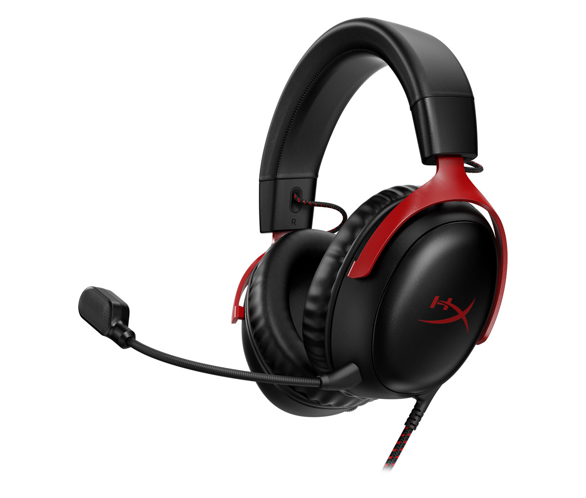
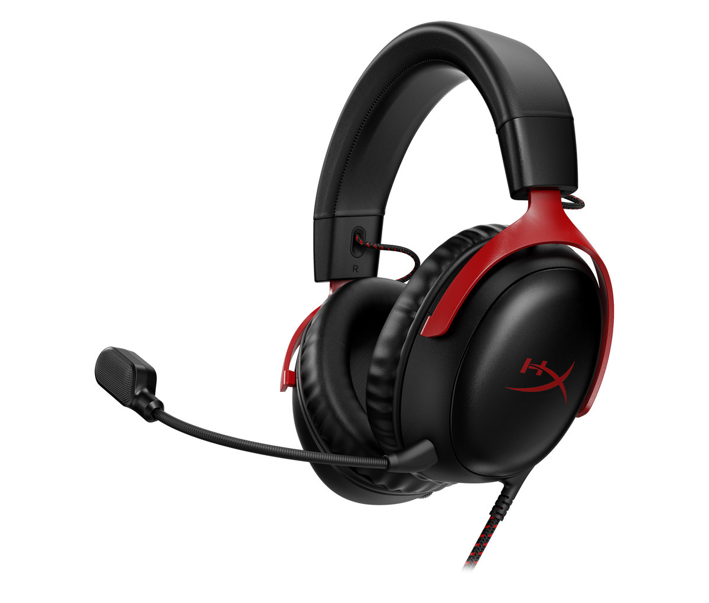

Sluchátka jsou zařízení určená k poslechu zvuku přímo do uší uživatele. Používají se při práci, hraní her i relaxaci. Dělí se na drátová, bezdrátová a herní headsety s mikrofonem. Kvalitní sluchátka poskytují čistý zvuk a potlačení okolního hluku. Materiály náušníků a tvar konstrukce ovlivňují pohodlí při nošení.
Bezdrátová sluchátka se dnes stala běžným standardem díky Bluetooth technologii. Nabízejí svobodu pohybu bez omezení kabelem. Herní headsety umožňují komunikaci s ostatními hráči prostřednictvím mikrofonu. Některé modely mají i prostorový zvuk nebo vibrační efekty. Výběr závisí na účelu – jiná sluchátka se hodí na hudbu a jiná na hraní her.
- Drátová sluchátka – klasické připojení kabelem
- Bezdrátová sluchátka – technologie Bluetooth
- Herní headset – s mikrofonem pro komunikaci